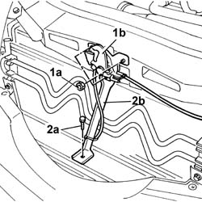
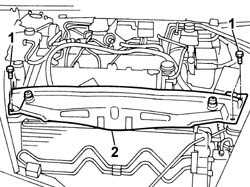
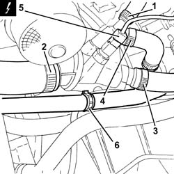
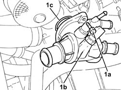

1088C30 THERMOSTAT UNIT - R.R.
- Path
- Procedures > 10 ENGINE > 1088 ENGINE COOLING > 1088C WATER PUMP AND THERMOSTAT > 1088C30 THERMOSTAT UNIT - R.R.
- Kind
- repair procedure (removal / refitting; the operation number is the code)
- Applies to
- engines: 2.4 JTD 20V; all production periods
- Interactive page
- https://sloeber94.github.io/elrnDB-lThss/en/#/850980
Applies to: engines: 2.4 JTD 20V; all production periods
 Removing
Removing
 Refitting
RefittingSee in Op. 7055B54 PROTECTION/GUARD under engine - R.R.
- Lower the vehicle.
See in Op. 7040D50 ENGINE COMPARTMENT UPPER SOUND INSULATION SHIELD - R.R.
See in Op. 1016A10 SOUND-PROOFING COVER - R.R.
See in Op. 1048B44 RIGID air supply PIPE from heat exchanger to intake manifold - R.R.
See in Op. 1048A56 UPPER RESONATOR - R.R.
See in Op. 1048A50 air inlet pipe to turbocharger - r + r
1. Undo the fixing nuts (1a) and remove the bonnet lock (1b) from the housing in the crossmember.
2. Undo the lower nut (2a) and remove the lock reinforcement bracket (2b).

Applies to: engines: 2.4 JTD 20V; all production periods
1. Undo the retaining bolts.
2. Remove the upper front crossmember.

Applies to: engines: 2.4 JTD 20V; all production periods
1. Loosen the coolar and disconnect the coolant return pipe from the engine coolant reservoir, thermostat side.
2. Loosen the collar and disconnect the upper coolant input sleeve to the radiator, thermostat side.
3. Loosen the collar and disconnec the coolant delivery pipe to the climate control system heater, thermostat side.
4. Loosen the collar and disconnect the coolant delivery pipe to the coolant/exhaust gas heat exchanger for the EGR system, thermostat side.
5. Disconnect the electrical connection from the engine coolant temperature sensor.
 | Description | Connector |
|---|---|---|
5 | Engine coolant temperature sensor/sender unit | K036 |
6. Open the collar and release the coolant return pipe from the heater.

Applies to: engines: 2.4 JTD 20V; all production periods
1. Undo the bolts (1a) and remove the thermostat (1b) complete with O-ring (1c).

Applies to: engines: 2.4 JTD 20V; all production periods
Refitting
Removing- Fit the vacuum unit complete with o-ringand fasten it by tightening the bolts to the recommended torque.
- Connect the electrical connection to the engine coolant temperature sensor.
| Description | Connector |
|---|---|---|
. | Engine coolant temperature sensor/sender unit | K036 |
- Connect the coolant delivery pipe to the coolant/exhaust gas heat exchanger for the EGR system, thermostat side and tighten the collar.
- Connect the coolant delivery pipe to the climate control system heater, thermostat side, and tighten the band.
- Connect the upper coolant input sleeve to the radiator, thermostat side, and tighten the band.
- Connect the coolant return pipe from the engine coolant reservoir to the coolant reservoir, thermostat side, and tighten the collar.
- Fit the upper front crossmember and tighten the fixing bolts to torque.
 | Value - daNm | Fastening | Component | Ø |
|---|---|---|---|---|
. | 0.6 | Bolts | FRONT WING CROSSMEMBER HEADLAMP HOUSINGS | M6 |
- Fit the bonnet lid lock complete with bracket and tighten the nuts fixing it to the upper crossmember and to the lower crossmember.
See in Op. 1048A50 air inlet pipe to turbocharger - r + r
See in Op. 1048A56 UPPER RESONATOR - R.R.
See in Op. 1048B44 RIGID air supply PIPE from heat exchanger to intake manifold - R.R.
See in Op. 1016A10 SOUND-PROOFING COVER - R.R.
See in Op. 7040D50 ENGINE COMPARTMENT UPPER SOUND INSULATION SHIELD - R.R.
- Raise the vehicle.